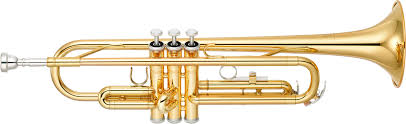

Victor Redler
Jag är 23 år och kommer från Örebro. Pluggat programmering på gymnasiet och högskola.
Jobbat på lager i knappt ett år.
På fritiden gillar jag att programmera, gejma och träna(specifikt löpa, cykla och simma). Ett mer udda intresse är kanske det att jag spelar trumpet till och från.
Det jag gillade med Mosh kurser var att han var kort och direkt när han förklarade ämnet, jag gillade att han gick igenom ämnena kodmässigt och jag tyckte att uppgifterna var roliga att göra.
Det ända jag tyckte att just Mosh kurser kunde ha mer av var fler övningsuppgifter.
